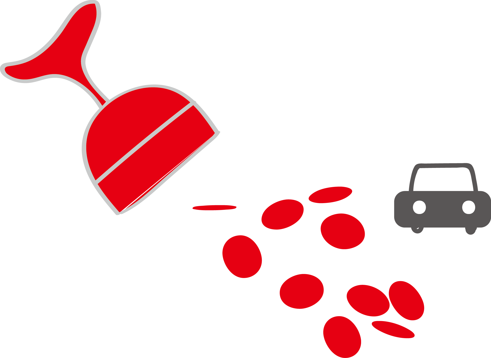

M a r s t o n, A n t h o n y
Ten little soldier boys went out to dine;
One choked his little self and then there were nine.
Morris was already accounted for. He suffered from indigestion. Before leaving London I gave him a capsule to take last thing at night which had, I said, done wonders for my own gastric juices. He accepted it unhesitatingly-the man was a slight hypochondriac. I had no fear that he would leave any compromising documents or memoranda behind. He was not that sort of man.
Anthony Marston and Mrs. Rogers died first, the one instantaneously, the other in a peaceful sleep. Marston, I recognized, was a type born without that feeling of moral responsibility which most of us have.
He was amoral pagan.
